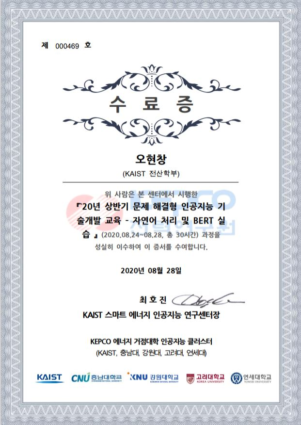

Education
KAIST
Daejeon, S. Korea
2017.03 - 2022.02 (Expected)
B.S. in Computer Science & Biological Sciences
Fully Funded by the President of Korea (2017 Spring ~2019 Spring)
KAIST Presidential Fellowship (KPF)
Leadership Certificate - Diamond Class
Smart Energy Artificial Intelligence Research Center
Completion of the 30hr Course "Natural Language Processing and BERT" (Certificate in Korean)
×

Completion of the 30hr Course "Problem Solving and Estimation" (Certificate in Korean)
×

University of California, Berkeley
Berkeley, CA, U.S.A.
2017.06 - 2017.08
U.C. Berkeley Summer Session
Took courses on "Multivariable Calculus", and "General Psychology"
Fully Funded by the President of KAIST
Korea Science Academy of KAIST
Busan, S. Korea
2014.02 - 2017.02
Summa Cum Laude in Biological Sciences (1st Place)
Camborne Science and International Academy
Camborne, England
2016.07
Short Term Exchange Student
Built a functional prototype for rocket-propelled vehicle.
Took an ecological survey of shores at Godrevy.
Moscow Chemical Lyceum
Moscow, Russia
2015.08
10th Chemistry Summer School
Synthesised and Tested Antibiotics and Organic Sensor Molecules
Publications
Metal Organic Frameworks
Nanochemistry Lab, Korea Science Academy (Prof. Eun-Young Choi)
Busan, S. Korea
1st Author "Tabular Organisation of Ionothermally Prepared MOFs To Extrapolate Chemical Trends and Successfully Predict Synthesis Results" Biomedical Journal of Scientific & Technical Research (2018)
2nd Author "Microporous metal organic framework-based copolymers with efficient gas adsorption capability and high temporal stability" Macromolecular Research (2017)
1st Author "Ionothermal synthesis of a novel 3D cobalt coordination polymer with a uniquely reported framework:[BMI] 2 [Co2 (BTC) 2 (H2O) 2]."Advances in Materials Science and Engineering (2017)
1st Author "The Effect of [RMI] X (R= alkyl; X= halide) Ionic Liquids on the Formation of M-H₃BTC Metal Organic Frameworks" Korean Polymer Society 40th Annual Conference (2016)
Neural Stem Cells
Animal Cell Biology Lab, Korea Science Academy (Dr. Ki-Youb Park)
Busan, S. Korea
2nd Author "Inhibition of Neurogenesis of Subventricular Zone Neural Stem Cells by 5-ethynyl-2-deoxyuridine (EdU)." Korean Journal of Biological Sciences (2017)
Unpublished Research Projects
Human Computer Interaction
NMAIL (Neuro-Machine Augmented Intelligence Laboratory), School of Computing, KAIST (Prof. Sungho, Jo)
Daejeon, S. Korea
2020.08-Present
Research Intern: Controlling Drones with Brain Waves
KIXLAB (KAIST Interaction Lab), School of Computing, KAIST (Prof. Juho, Kim)
Daejeon, S. Korea
2020.01-2020.08
Research Intern / URP Participant: Personalized Correction and Expansion of Vocabulary Use Based on User’s Speech
Microbial Fuel Cells
Catalysis & Green Energy Laboratory, Pukyung National University (Prof. Hee-Chul, Woo)
Busan, S. Korea
Received DGIST Presidential Award in the 5th National Joint Symposium on Research and Education.
Microbial Fuel Cells on Lignin Design of Microbial Fuel Cells that can Decompose and Extract energy from lignin, a biologically Inert Compound that Forms the Bulk of Wood. (2015)
Analytic Chemistry Lab, Korea Science Academy (Dr. Man-Seok, Cheon)
Busan, S. Korea
Microbial Desalination Cell Tested various membranes, microbial consortia, metabolites, etc. for optimal desalination of seawater of Korea. (2016)
Sigma Lab, National Junior College
Singapore
Microbial Desalination Cell Tested various electrolyte for each microbial consortium for optimal desalination of seawater of Singapore. (2017)
Organic Sensors for Metal Ions
Organic Synthesis Lab, Korea Science Academy (Dr. Jinho Oh)
Busan, S. Korea
Synthesised organic sensors based on given recipe, and tested their functions on various metal ions. Used Infrared Spectroscopy(IR) and Nuclear Magnetic Resonance (NMR) to confirm successful synthesis (2015)
Moscow Chemical Lyceum
Moscow, Russia
Substituted ligands, where metal ions bind, with many different candidate subparts and tested how they affect the sensitivity of the sensor. (2015)
Ex-Curricular Activities
Writing & Publication
KAIST Research Magazine
Daejeon, S. Korea
2020.08~ Present
Reporter:
Organised the first issue of the magazine along with the school administration. Interviewed various researchers of KAIST and wrote research-related articles.
S. Korea
2017.09-2019.06
Head of Dept. of Scholastics
Writes and Reviews Articles on Concurrent Research Projects at KAIST, Contemporary Research
Areas, and Tech Issues
Areas, and Tech Issues
Reporter on Culture:Writes Articles on Contemporary Culture Issues, Movies, Exhibitions, and Books
Translation
KAIST Freshman Program Designers
Daejeon, S. Korea
2020.08~ Present
Translator:
Translated the learning materials of the mandatory course, 'Exciting College Life(Studienberatung Programme)'
Mentoring & Social Service
KAIST Presidential Fellowship
Head of Bureau of Intl. Relations:
Organised 1st Joint Contextual Research Project with Centre for Innovation,
Indian Institute of Technology, Madras(IITM)
Indian Institute of Technology, Madras(IITM)
Chennai, India
2019.08, 2020.1
Student Head
Daejeon, S. Korea
2017.12-2018.12
Seminar Organiser: Organised and operated student seminars on various research areas, including Machine Learning, Model Building in Chemistry, and Neuroscience.
Social Works Organiser: Organised and operated student volunteer works.
KAIST Leadership Executing Team (K-Let)
Student Mentor: Prepared lessons for younger students to foster team-building, dream-searching,
improving self-esteem, etc.
improving self-esteem, etc.
Boeun/ Daejeon/ Geumsan, S.Korea
2017.02-2019.08
Program Organiser: Organised and Participated the 1st Talented Youth Camp, supported by Chungcheongnamdo Office of Education.
Primorsky Krai, Russia
2017.12-2018.01
Teaching & Knowledge Sharing
KAIST Global Strategy Institute 3rd Forum (Youtube)
Daejeon, S.Korea
2020.09
Panel: Raised ethical questions on transhumanism and biotechnology
KAIST School of Computing
Daejeon, S.Korea
2019.08-Present
Lab Session TA: TA for CS101, Intro. to Programming course, responsible for the mandatory lab sessions.
Supplementary Material Authour: Provided answers and explanations with video & documentation on lab sessions, homeworks, and practice quizes.
KAIST Prototyping Group (kOOk)
Daejeon, S.Korea
2019.01-2020.02
Seminar Presenter: Presented Seminars on HTML/CSS and MongoDB
Founding Member: Planned and attended seminars on Flask, R, ReactJS, and other prototyping-related tools.
KAIST Center for Gifted Education
Tutor: Teaching programming with Python to elementary school students
Daejeon, S.Korea
2020.09-Present
Temporary Tutor: Took part in the "Summer Programming Camp", that involved basics of programming and hands-on experience with Arduino.
Daejeon, S.Korea
2020.08
Midam Scholarship Committee
Daejeon, S.Korea
2017.08-2017.12
English Lecturer: Taught high school students for the Korean College Scholastic Ability Test.
Major Awards
Gyeongju, S.Korea
2016.08
(World) 2nd Place: Culang: social network with word-to-word translation along with sentence-wise translation to naturally pick up foreign culture and language
Korea Science Academy R&E Programme
Busan, S.Korea
2015.02~ 2015.12
5th National R&E Joint Forum - DGIST Presidential Award
(School) Solo Excellence Award / Group Participation Award: Design of Microbial Fuel Cell that Degrades and Yields Energy from a Biochemically Inert Substance, Lignin
Daejeon, S.Korea
2015.08~ 2015.12
(National) Bronze Prize: Design of Radiation Detection Kit with Antibiotic-Resistance Gene
Incheon, S.Korea
2015.01
(National) Silver Medal: Explored Characteristics of Artificial Muscle Made of Nylon / Researched on Why Wet Fabrics Look Darker
Projects
2019 Yet Nonamed Testing False Positive Speech Recognition Using Evolutionary Algorithms
2019 Travelling Salesman Problem Solver Solves Travelling Salesman Problem with Stochastic Algorithms
2019 Parapipe Task Organiser that Shapes Tasks as Parallel Pipelines
2019 re:Cruit Job Hunting Platform for Students
2019 PoZangZee Renovated Email System for Expert Users
2018 Mumurm Crowdsourcing Service for Restful Places
2016 Culang Culture & Language Exchange at Scale via Social Media
Skills
Languages Korean(Native), English(Fluent), Chinese(Intermediate, HSK5), German(Elementary), Russian(Elementary)
Programming Languages Python, Javascript, Java, C, HTML/CSS
Frameworks Flask, MongoDB, ReactJS